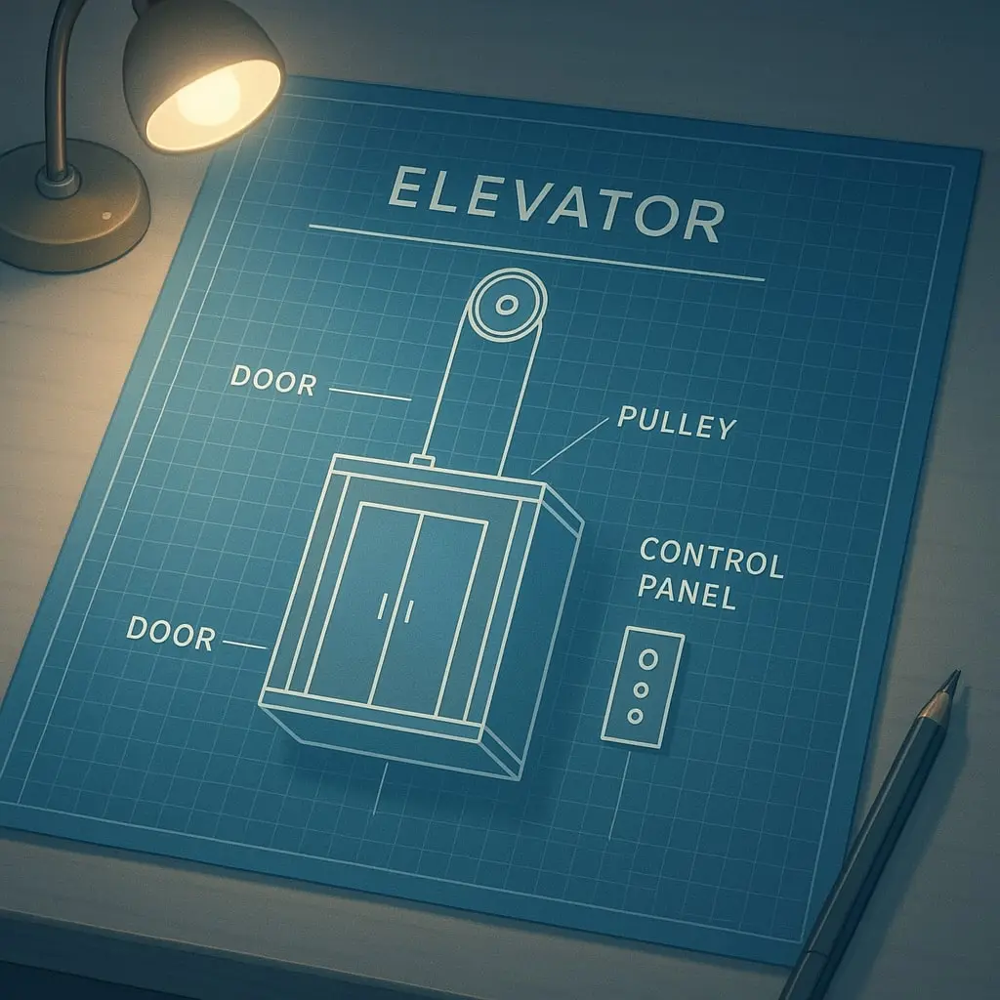
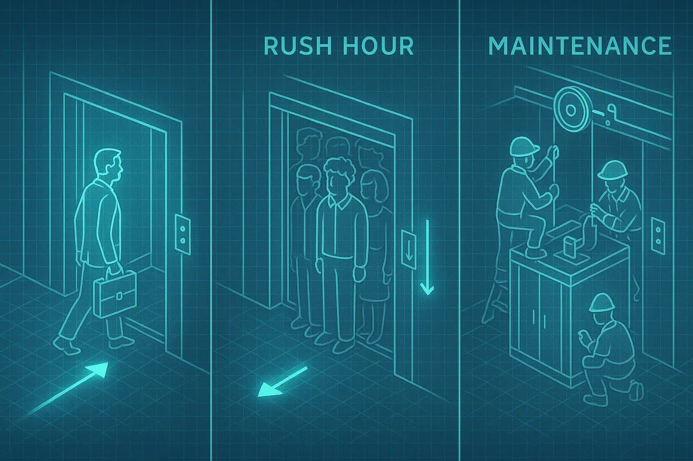
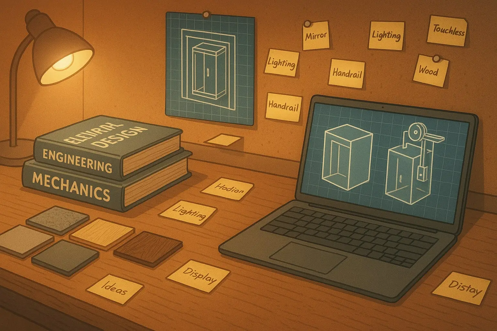

1. Setting a Base Case
Every design journey begins with establishing fundamental principles. For our elevator, we need to define the basic functionality and constraints.

Door
Entry point for passengers, must meet safety standards
Pulley
Core mechanism for vertical movement
Control Panel
Interface for user interaction
Key Principles
- Define core functionality (vertical transport)
- Establish basic constraints (weight, speed, size)
- Identify essential components
- Create a minimal working model
"Starting with a simple base case helps conceptualize the problem space and gives you a foundation to build upon."
2. Drawing Out Simple Example Scenarios
After establishing a base case, we need to explore different use cases to understand how our elevator system will behave in various scenarios.

@@ -168,7 +168,7 @@

Lighting
Handrail
@@ -254,4 +254,4 @@